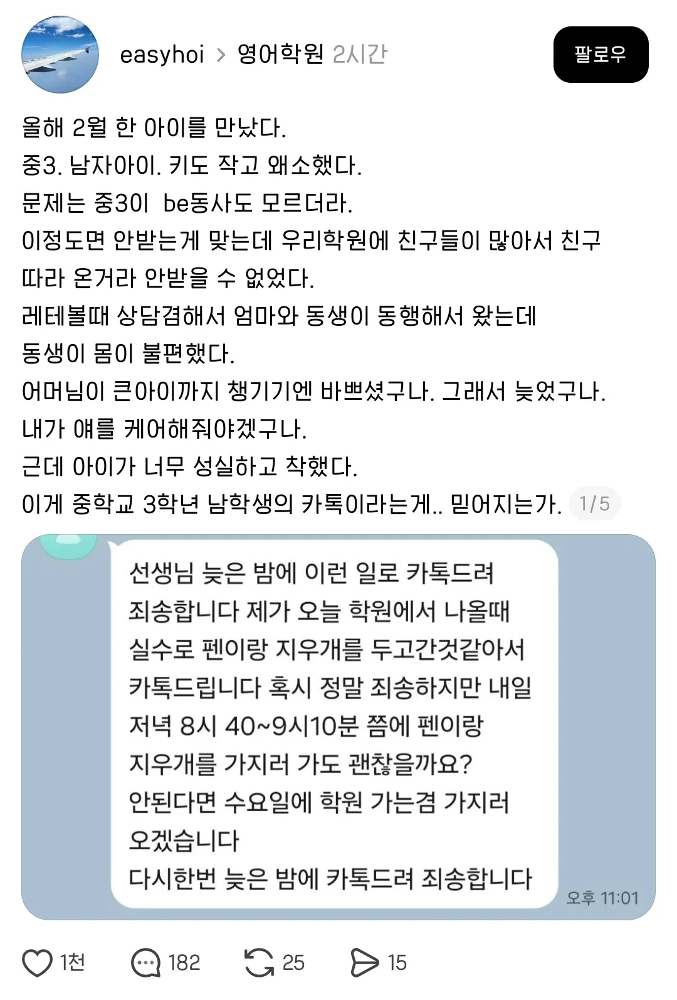
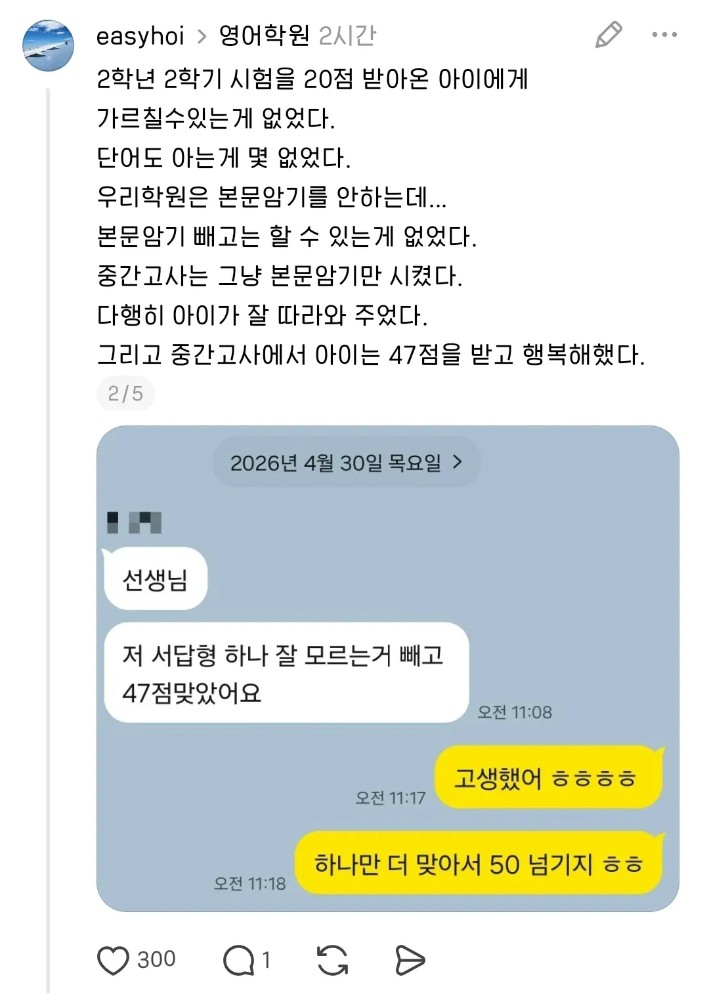
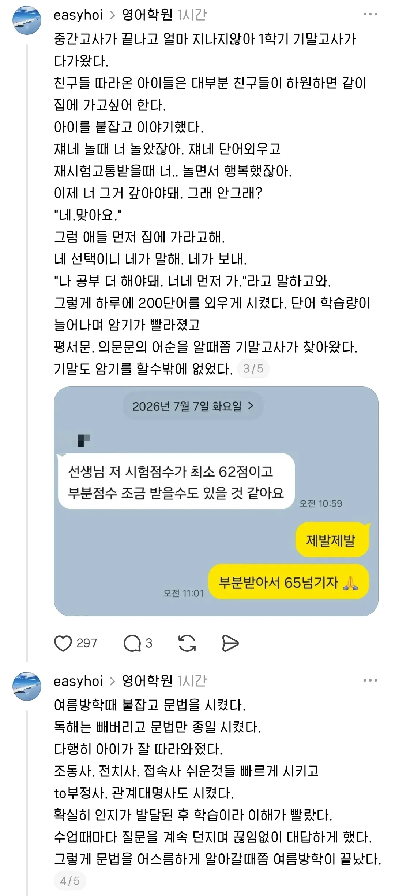

저 사실 오픽AL입니다
토익 점수 1020점이에요
아니오 김태희가 미망인이 되었다는 뜻입니다
아이가 어른스러우면 좀 보기 먹먹한 그런 느낌이 든다.... 무례해도 좋고 버릇럾어도 좋으니 아이는 아이다운게 좋다...
니가 당해봐라 대갈통 존나쎄게 후려치고싶다
그렇게 보기엔 중3 남자애면 2차 성징도 지나고 꽤 성숙한 나이야. 별 고난 없이 큰 아이도 성실하고 착한 애들은 저런애들 많아
영어공부를 하눈데도 한자를 좀 알면 좋음
부정사가 부정적인 걸로 착각할 수 있음
근데 그걸 한자로 써주거나 용어 뜻을 설명해 주는 선생이 없음.
예전에 타미 선생님이 해주셨던걸로 기억하는데, 정확하진 않음
오쏘독스 그래마~
나도 몰라!
난 지금도 영어문법 모르겠어
와 예의 바른거보니 아주 바른 청년으로 자라겠구나
문장암기 문법외우기 이런거 시켰을때 별 탈 없이 성적 올리는거처럼 보여도 저 진도를 군말없이 따라와 주는거 자체도 대단한거임
쟤는 철이 너무 많이 들어서 잘 따라오는거도 있겠지만
기본적으로 말 안듣고 숙제 같은거 내줬을 때 안하거나 집중, 생각을 안해서 그냥 틀리는 애들도 많고
공부에 맞는 머리가 아닌 애들도 간혹 한두명씩 있음. 아무리 설명해도 기본 베이스 자체가 쉽게 피곤해하거나 데이터 자체가 부족한데 학원말고 집이나 다른 곳에서는 공부 자체를 안하는 경우.
저렇게 학생 자체가 의욕이 있으면 가르치는 사람도 즐겁고 의욕이 진짜 많이 생김. 다음에 뭐 가르칠까 이렇게 진도 짜면 잘 따라오겠지 하고 ㅋㅋㅋㅋㅋ
사랑해 뽀뽀쪽♥